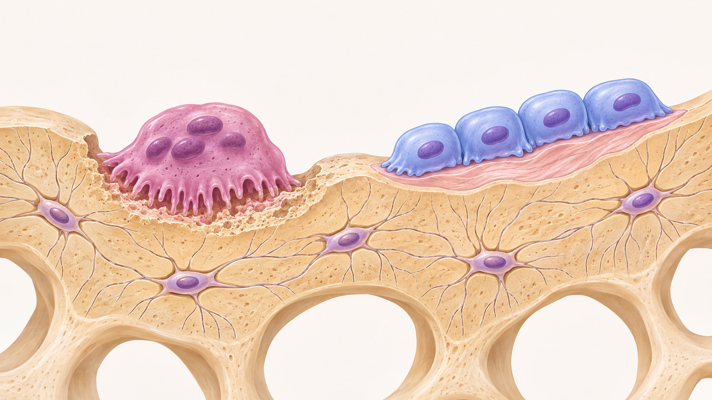

Skelettets fysiologi
Skelettet är en levande vävnad som hela tiden förnyas och anpassas. Det ger kroppen stadga, skyddar flera av de inre organen och fungerar tillsammans med muskler och leder när kroppen rör sig. Skelettet har också viktiga uppgifter som inte syns utanpå: i den röda benmärgen bildas de flesta blodkropparna, och benvävnaden fungerar som kroppens största förråd av kalcium och fosfat. Sammanfattningen nedan bygger på kapitlet om skelettet i kurslitteraturen.
Benvävnaden byggs upp av både mineral och kollagen
Benvävnad består av celler och en grundsubstans, ofta kallad benmatrix. I matrixen finns både oorganiska mineraler, framför allt kalciumfosfat, och organiskt material, främst kollagenfibrer. Mineralerna gör benvävnaden hård och motståndskraftig mot tryck. Kollagenet ger den seghet och hjälper den att tåla sträckning och böjning. Tillsammans gör dessa beståndsdelar benet starkt utan att det blir helt sprött.
Det finns tre huvudtyper av benceller. Osteoblaster bildar ny benmatrix. När de omsluts av den vävnad de själva har producerat utvecklas de till osteocyter, som finns kvar inne i benvävnaden och hjälper till att underhålla den. Osteoklaster bryter i sin tur ned benmatrix. Deras samordnade arbete gör att benvävnaden kan förnyas och förändras över tid.

Illustrationen visar hur benvävnad förnyas: osteoklaster bryter ned benmatrix, osteoblaster bildar ny benvävnad och osteocyter finns inbäddade i benmatrixen, där de bidrar till att underhålla vävnaden.